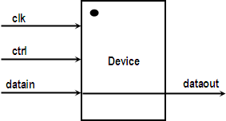
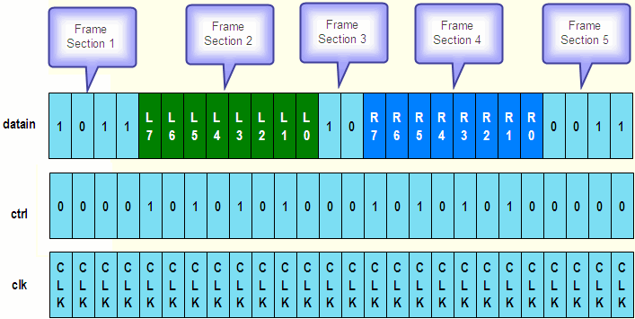
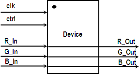
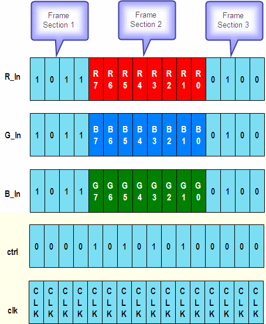
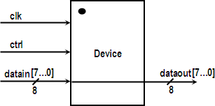
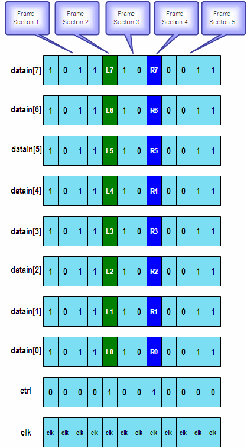

Introduction of the demo devices
In this section, the following demonstration devices are used as examples of how to perform the DSM setup.
Audio device

clk |
Clock pin |
ctrl |
Control pin |
datain |
Audio frames (packets) |
dataout |
Use internal loopback to output the audio frames (packets) |
The device uses a 26-bit frame format, which encodes the audio waveforms of the Left
and Right channels on pin datain.

The testing purpose is to develop the setup using the DSM feature, and capture the waveform data on pin dataout simultaneously. This test scenario requires using an 8-bit up-ramp (0x00-0xFF) on the left channel, and an 8-bit down-ramp (0xFF-0x00) on the right channel.
Video device

clk |
Clock pin |
ctrl |
Control pin |
R_In |
Video frames (packets) for R input channel |
G_In |
Video frames (packets) for G input channel |
B_In |
Video frames (packets) for B input channel |
R_Out |
Use internal loopback to output the vedio frames (packets) for R channel |
G_Out |
Use internal loopback to output the vedio frames (packets) for G channel |
B_Out |
Use internal loopback to output the vedio frames (packets) for B channel |
The device uses a 16-bit frame format, which encodes the video waveforms of the R, G,
and B channels on pin R_In, G_In, and
B_In.

The testing purpose is to develop the setup using the DSM feature, and capture the
waveform data on pin R_In, G_In, and B_In
simultaneously. This test scenario requires using an 8-bit sinewave (0x00-0xFF) on three
channels.
Parallel audio device

clk |
Clock pin |
ctrl |
Control pin |
datain |
Audio frames (packets) |
dataout |
Use internal loopback to output the audio frames (packets) |
The device uses a 12-bit frame format, which encodes the audio waveforms of the Left
and Right channels on pin datain[7] to datain[0].

The testing purpose is to develop the setup using the DSM feature, and capture the waveform data on pin dataout simultaneously. This test scenario requires using an 8-bit up-ramp (0x00-0xFF) on the left channel, and an 8-bit down-ramp (0xFF-0x00) on the right channel.
Functional changes
- Introduced before SmarTest 6.3.2